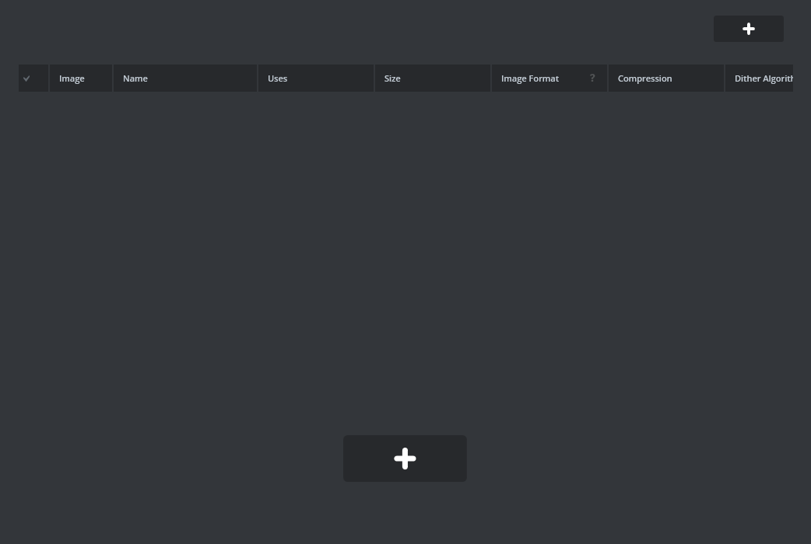
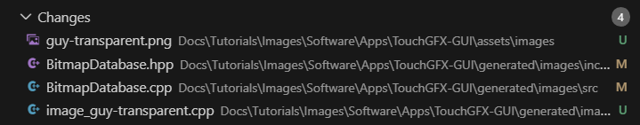

Images - Working with Graphics and Assets
Welcome to the UNA SDK tutorial series! The Import Images tutorial teaches you how to import and display graphic assets in UNA Watch applications. This tutorial focuses on the complete workflow of creating images (such as drawing in Paint), importing them into TouchGFX Designer, and displaying them on screen through the UNA app framework.
What You’ll Learn
How to create and prepare graphic assets for UNA apps
The process of importing images into TouchGFX Designer
How images are converted and stored in the UNA SDK
Using bitmap IDs to reference and display images in code
Programmatically adding images without using designer-generated backgrounds
Mode switching between Image and ScalableImage using L1 button
Tick-based jump animation triggered by R1 button via
handleTickEvent()Understanding the TouchGFX image pipeline in UNA applications. For detailed information about the TouchGFX port implementation, see TouchGFX Port Architecture
Best practices for image optimization and management
Getting Started
Prerequisites
Before starting the Import Images tutorial, you need to set up the UNA SDK environment. Follow the Windows Setup section of sdk-setup.md for complete installation instructions, including:
UNA SDK cloned (
git clone https://github.com/UNAWatch/una-sdk.git)ST ARM GCC Toolchain (from STM32CubeIDE/CubeCLT, not system GCC)
CMake 3.21+ and make
Python 3 with pip packages installed
TouchGFX Designer installed (see Windows Setup section of sdk-setup.md)
Minimum requirements for Import Images:
UNA_SDKenvironment variable pointing to SDK rootARM GCC toolchain in PATH
CMake and build tools
TouchGFX Designer for GUI development
Image editing software (Paint, GIMP, Photoshop, etc.)
Building and Running Import Images
Verify your environment setup (see Windows Setup section of sdk-setup.md for details):
echo $UNA_SDK # Should point to SDK root. # Note for backward compatibility with linux path notation it uses '/' which arm-none-eabi-gcc # Should find ST toolchain which cmake # Should find CMake
Navigate to the Images tutorial directory:
cd $UNA_SDK/Docs/Tutorials/Images
Build the application:
mkdir build && cd build cmake -G "Unix Makefiles" ../Software/Apps/Images-CMake make
The app will start and display imported images on screen, demonstrating the complete image import workflow in UNA apps.
Running on Simulator
To test the app on the simulator (Windows only):
Open
Images.touchgfxin TouchGFX Designer and click Generate Code (F4) (do this once).Navigate to
Images\Software\Apps\TouchGFX-GUI\simulator\msvsOpen
Application.vcxprojin Visual StudioPress F5 to start debugging and run the simulator
In the simulator, use keyboard keys to interact:
1 = L1 (Toggle between Image and ScalableImage modes)
3 = R1 (Trigger jump animation when in Image mode)
The simulator will display the imported character image with scaling and animation capabilities. For detailed simulator setup and button mapping, see Simulator.
Images App Overview
The Images tutorial demonstrates programmatic image display and interactivity in UNA Watch apps:
Key Features Demonstrated
No background: Pure programmatic content - no designer-generated backgrounds or boxes
Dual image modes: L1 toggles between Image (
guyImage) and ScalableImage (scaledGuyImage)Jump animation: R1 triggers sine-wave Y-offset animation on
guyImagevia tick events
The Asset Pipeline
Creation: Images are created using external tools (Paint, GIMP, etc.)
Import: Images are added to TouchGFX Designer project
Conversion: TouchGFX converts images to optimized bitmap formats
Storage: Converted images are stored in flash memory
Display: Images are referenced by ID and displayed on screen
The GUI Layer (Frontend)
Built with TouchGFX framework. For detailed information about the TouchGFX port implementation, see TouchGFX Port Architecture
Programmatically adds images in
setupScreen()Handles L1/R1 buttons for mode switching and animation triggers in
handleKeyEvent()Drives animation in
handleTickEvent()
Image Management in UNA SDK
Images are converted to TouchGFX bitmap format during build
Each image gets a unique ID in
BitmapDatabase.hppImages are stored in flash memory for efficient access
TouchGFX handles image decompression and display
Image Import Process
Follow these steps to import and display images in your UNA app:
Step 1: Create Your Image Asset
Open your image editor (Paint, GIMP, Photoshop, etc.)
Create a new image with appropriate dimensions:
Consider the UNA Watch display (typically 240x240 pixels)
Use power-of-2 dimensions when possible for better compression
Choose appropriate color depth (RGB565 for photos, indexed for icons)
Draw or import your graphic:
For this tutorial, create a simple character or icon
Save as PNG format with transparency if needed
Save your image as
my_image.pngin a temporary location
Step 2: Import into TouchGFX Designer
Open the TouchGFX project:
Images.touchgfx
Navigate to the Images tab in TouchGFX Designer
Click “Import Images” and select your
my_image.pngfile

Configure image settings:
Choose appropriate color format (RGB565, ARGB8888, etc.)
Enable dithering if needed for better quality
Set compression options
Generate code after importing:
Click “Generate Code” in TouchGFX Designer

- This creates bitmap IDs and conversion code
Step 3: Display the Image in Code
After importing guy-transparent.png, TouchGFX generates BITMAP_GUY_TRANSPARENT_ID.
Images are added programmatically in MainView::setupScreen():
// Programmatic image setup - no background
guyImage.setBitmap(touchgfx::Bitmap(BITMAP_GUY_TRANSPARENT_ID));
guyImage.setPosition(70, originalY, 100, 100);
guyImage.setVisible(false); // Initially hidden (scaled mode active)
add(guyImage);
scaledGuyImage.setBitmap(touchgfx::Bitmap(BITMAP_GUY_TRANSPARENT_ID));
scaledGuyImage.setPosition(70, originalY, 120, 120);
scaledGuyImage.setScalingAlgorithm(touchgfx::ScalableImage::BILINEAR_INTERPOLATION);
scaledGuyImage.setVisible(true); // Initially shown
add(scaledGuyImage);
Note: Widgets declared as members in MainView.hpp. Includes placed in header.
Step 4: Build and Test
Rebuild the application:
cmake -G "Unix Makefiles" ../Software/Apps/Images-CMake make
Run on simulator to see your imported image displayed
Test on hardware to verify performance and appearance
Code Details
Understanding Bitmap IDs
When you import images into TouchGFX, each image gets a unique ID defined in BitmapDatabase.hpp:
// Generated by imageconverter. Please, do not edit!
#ifndef TOUCHGFX_BITMAPDATABASE_HPP
#define TOUCHGFX_BITMAPDATABASE_HPP
#include <touchgfx/hal/Types.hpp>
#include <touchgfx/Bitmap.hpp>
const uint16_t BITMAP_GUY_TRANSPARENT_ID = 0;
// Additional bitmap IDs for other images...
Image Memory Management
Images in UNA apps are stored in flash memory and loaded into RAM as needed:
Flash Storage: Images are compressed and stored in internal/external flash
RAM Usage: Only active images are decompressed into RAM
Caching: TouchGFX manages image caching automatically
Optimization: Use appropriate color depths to balance quality and memory usage
Best Practices
Image Creation
Use vector graphics when possible for scalability
Choose appropriate color depths (RGB565 for most cases)
Consider transparency needs (ARGB8888 for transparent images)
Test images on actual device for color accuracy
Import Optimization
Enable dithering for better quality on limited color displays
Use compression options to reduce flash usage
Group similar images for better compression
Consider image dimensions vs. display capabilities
Performance Considerations
Minimize number of active images on screen
Use appropriate scaling algorithms
Avoid frequent image switching in animations
Profile memory usage on target hardware
File Organization
Keep original source images in
assets/images/Use descriptive names for bitmap IDs
Document image purposes and dimensions
Version control your image assets
Next Steps
Import your first image - Follow the steps above to add a custom image to the tutorial app
Experiment with different formats - Try various color depths and compression settings
Create image sequences - Import multiple frames for animations
Optimize for performance - Test memory usage and display performance
Explore advanced features - Study TouchGFX documentation for effects and transformations
Continue to other tutorials - Learn about buttons, text, and complex interactions
Troubleshooting
Import Issues
Ensure image dimensions are reasonable for the display
Check that TouchGFX Designer is properly installed
Verify image format is supported (PNG, BMP, etc.)
Regenerate code after making changes
Display Problems
Confirm bitmap ID is correct in
BitmapDatabase.hppCheck image position and dimensions fit the screen
Verify color format matches display capabilities
Test on simulator first, then hardware
Build Errors
Ensure TouchGFX project is synchronized with CMake build
Check for missing image files in assets directory
Verify bitmap database is regenerated after changes
Clean build directory and rebuild if issues persist
Performance Issues
Reduce image resolution if memory constrained
Use simpler color formats (RGB565 vs ARGB8888)
Limit number of simultaneous images
Profile with TouchGFX Performance Analyzer
Remember: Images are a powerful way to make your UNA Watch apps visually appealing. Start simple, optimize as needed, and you’ll create engaging user interfaces that work great on the small screen!